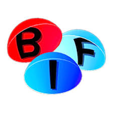

York Learning Center Planetarium Shows
The York County Astronomical Society, celebrating 13 years offering planetarium programs to the public, is now offering Saturday afternoon programs for young children and families and Saturday evening for older family members at the York Learning Center Planetarium. This month, we are featuring a children’s program, One World, One Sky: Big Bird’s Adventure and Chasing the Ghost Particle.
Show date is Saturday, September 7, 2019 at:
- 2:00PM - One World, One Sky: Big Bird’s Adventure
- 2:40PM - StarWatch
3:20PM - Defying Gravity: It Is Rocket Science!
7:00PM - Chasing the Ghost Particle
7:40PM - StarWatch
8:20PM - Phantom of the Universe
The planetarium is located in the York Learning Center at 301 East 6th Avenue, York PA. Admission is $4.00 for adults, $3.00 for children and seniors. Admission to any second or third show is $1.00 each. Cash and most credit and debit cards are accepted. Private show reservations are available for $40 for a 45 minute program for up to 58 people.
StarWatch
Learn how to find the planets and constellations that are visible in York’s night sky. Become a star watcher by exploring the current night sky, locate visible planets and constellations, and enjoy some sky lore. Receive a star map and get answers to questions such as:
* What can be seen with a telescope tonight?
* How do I find the North Star?
* Is there really a bear in the sky?
* Why do stars have different colors?
* What are the names of the brightest stars?
* Why does Jupiter have different colored clouds?
One World, One Sky: Big Bird’s Adventure!
In One World, One Sky: Big Bird’s Adventure!, Elmo and Big Bird live in the United States and Hu Hu Zhu lives far away in China, but they discovered that they still see the same stars at night! The word for star in Chinese is “xing xing” (pronounced “sing sing”). How many “xing xing” do you see in this sky? When Elmo and Hu Hu Zhu “travel” to the moon, they discover some basic but surprising scientific facts. For example, they can’t fly a kite there because there is no wind. The fuzzy friends then excitedly realize that children like to fly kites in both China and the United States!
Defying Gravity: It Is Rocket Science!
Meet Apollo Aurora, host of the Planetarium Channel’s universally loved gravity news source, Defying Gravity, It Is Rocket Science! With special robot correspondents Apple 1-6-8-6 and EGR-1, Apollo and her team will explore rocket power, gravity on other planets, monstrous black holes and even what keeps us grounded on Earth! Tune into this brand new planetarium show and uncover the mysteries of gravity.
Chasing the Ghost Particle
Deep in the ice at the heart of Antarctica, the biggest and strangest detector in the world waits for mysterious messengers from the cosmos. The detector is Ice Cube! The messengers are neutrinos, ghostly particles that give us tantalizing looks into world of exploding stars and black holes. This show tells the incredible story of how an international team of scientists and engineers transformed one billion tons of Antarctic ice into a telescope. Building Ice Cube was a titanic endeavor driven by our human passion for discovery. Witness stunning views of the South Pole, captivating animations of the Ice Cube detectors capturing a neutrino collision-and eye-catching views of the cosmos. Chasing the Ghost Particle: From the South Pole to the Edge of the Universe will take you on a journey you will never forget.
Phantom of the Universe
Phantom of the Universe is an exciting exploration of dark matter, from the Big Bang to its anticipated discovery at the Large Hadron Collider. The show reveals the first hints of its existence through the eyes of Fritz Zwicky, the scientist who coined the term “dark matter.” It describes the astral choreography witnessed by Vera Rubin in the Andromeda galaxy and then plummets deep underground to see the most sensitive dark matter detector on Earth, housed in a former gold mine. From there, it journeys across space and time to the Large Hadron Collider at CERN, speeding alongside particles before they collide in visually stunning explosions of light and sound, while learning how scientists around the world are collaborating to track down the constituents of dark matter.
For more information on events, scheduling a private party star watch, directions to the observing site, or for general Society information please contact us at info@astroyork.com or leave a voice message after the recording at 717 759-9227 or visit our Facebook page
The Planetarium wishes to recognize and thank the British Fulldome Institute for programming support. 